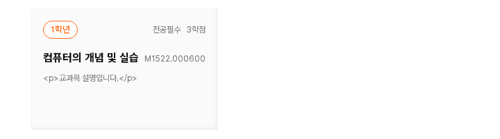

키보드로 이동할 때도 화살표 보이기
DS-019 카드 화살표 표시 적용 완료먼저, 확정·적용한 검색 기준
DS-017: 헤더 검색은 #737373 → 호버 #404040으로 진해진다.
DS-018: 그림은 유지하고 클릭 영역을 헤더 24×30px, 세미나·모바일 검색 실행 24×24px로 넓혔다.
본문 14px/28px, 글 제목 20px/600 유지. 명확한 문제가 없으면 기존 디자인을 유지한다(DS-016).
해결한 표시 문제
수정 전 문제: 교과목 카드형의 좌우 화살표는 마우스를 행에 올려야 보인다. 키보드 Tab으로 버튼에 도달해도 마우스가 바깥에 있으면 화살표와 초점 표시가 모두 숨겨져 위치를 알 수 없다.
변경 이유: WCAG 2.4.7은 키보드 초점 위치가 보이는 방식을 요구한다. 이번에는 버튼 전체의 투명도가 0이라 기존 브라우저 초점 표시도 같이 숨겨진다.
적용 내용: 카드 행에 키보드 초점이 들어왔을 때도 기존 마우스 호버와 같이 양쪽 화살표를 표시한다. 평소 모습·주황·그림 크기·배치·스크롤 동작은 유지한다.
입력 필드에 외곽선을 다시 추가하는 작업이 아니다. 화살표 버튼에 이미 있는 브라우저 초점 표시가 보이도록 하는 제안이다.
실제 Tab 초점 상태 비교
수정 전 · 왼쪽 화살표에 초점이 있지만 안 보임

DS-019 적용 · 행의 화살표와 현재 초점이 보임

{kind=link}
{kind=link}
Tab으로 직접 확인하기
아래 시작 버튼을 누른 뒤 Tab을 누르면 왼쪽 화살표로 이동한다. 한 번 더 누르면 오른쪽으로, 다시 누르면 행 밖으로 이동한다. 마우스를 행 밖에 두면 표시와 숨김을 확인할 수 있다.
평소에는 화살표 숨김.
호버·키보드 초점 때 표시.
DS-019 적용 완료 · 공통 초점 모양은 다음 검토
교과목 카드 행에 키보드 초점이 들어오면 양쪽 화살표를 표시한다.
F-Q1: 버튼·링크·선택 컨트롤의 공통 초점 표시를 별도로 비교한다.
마우스와 초점이 모두 행 밖으로 나가면 기존처럼 숨긴다. 모바일은 기존 목록형이어서 이 카드 행은 나타나지 않는다.